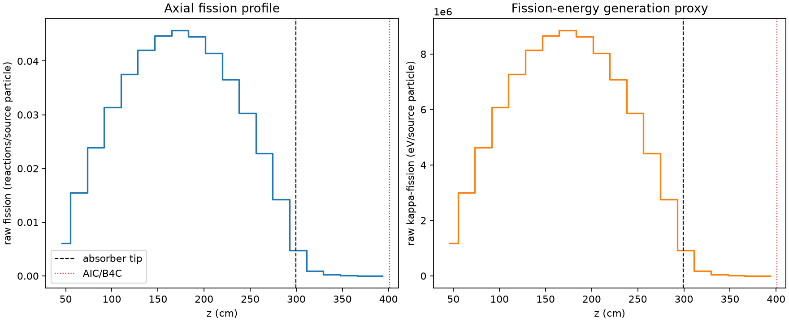
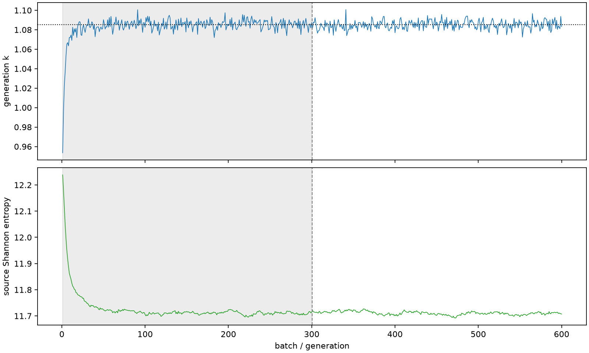

| field | value |
|---|---|
| experiment | V2-STAGE_128_OGRENCI_03-0002 |
| k | 1.085205518019617 |
| MC standard error | 0.0001727825021170361 |
| seconds | 999.5877228440004 |
| acceptance | not_assessed |
| convergence | review_required |
Completed is output integrity only; physical and statistical review required. Zero tallies do not prove zero production or zero uncertainty.
| diagnostic | value |
|---|---|
| geometric fuel voxels | 5280 |
| zero fission tally voxels | 0 |
| low signal fuel voxels | 640 |
| low signal fission share | 8.159508351350944e-05 |
| low signal kappa share | 8.1623351327245e-05 |
| important fission share | 0.9500180148787075 |
| previous filter included | 4640 |
| duration estimate s | 1562.5173488400023 |
| actual minus estimate s | -562.929625996002 |
| fission relative MC error | statistics |
|---|---|
| all_geometric_fuel | {"voxels": 5280, "positive_mean_voxels": 5280, "zero_mean_voxels": 0, "undefined_relative_error_voxels": 0, "median": 0.010140785921138583, "p95": 0.48071048901667457, "maximum": 0.983054034964265} |
| low_signal | {"voxels": 640, "positive_mean_voxels": 640, "zero_mean_voxels": 0, "undefined_relative_error_voxels": 0, "median": 0.41763224033934504, "p95": 0.8354531513322148, "maximum": 0.983054034964265} |
| important_95pct | {"voxels": 3242, "positive_mean_voxels": 3242, "zero_mean_voxels": 0, "undefined_relative_error_voxels": 0, "median": 0.008191539923952, "p95": 0.012450860680493654, "maximum": 0.01571312688887252} |
| outside_previous_filter | {"voxels": 640, "positive_mean_voxels": 640, "zero_mean_voxels": 0, "undefined_relative_error_voxels": 0, "median": 0.41763224033934504, "p95": 0.8354531513322148, "maximum": 0.983054034964265} |
| kappa_fission relative MC error | statistics |
|---|---|
| all_geometric_fuel | {"voxels": 5280, "positive_mean_voxels": 5280, "zero_mean_voxels": 0, "undefined_relative_error_voxels": 0, "median": 0.010129121759337015, "p95": 0.4802729426095516, "maximum": 0.983053714007965} |
| low_signal | {"voxels": 640, "positive_mean_voxels": 640, "zero_mean_voxels": 0, "undefined_relative_error_voxels": 0, "median": 0.41707284043947523, "p95": 0.8352094553149525, "maximum": 0.983053714007965} |
| important_95pct | {"voxels": 3242, "positive_mean_voxels": 3242, "zero_mean_voxels": 0, "undefined_relative_error_voxels": 0, "median": 0.008182844224705027, "p95": 0.01243760231383038, "maximum": 0.015690801130435406} |
| outside_previous_filter | {"voxels": 640, "positive_mean_voxels": 640, "zero_mean_voxels": 0, "undefined_relative_error_voxels": 0, "median": 0.41707284043947523, "p95": 0.8352094553149525, "maximum": 0.983053714007965} |
| axial bin | fission share | kappa-fission share |
|---|---|---|
| 1 | 0.01378731847322348 | 0.01378798843212389 |
| 2 | 0.034901008403431175 | 0.03490075420538938 |
| 3 | 0.05388174970422331 | 0.053881517550841446 |
| 4 | 0.07091939535189878 | 0.0709189747177242 |
| 5 | 0.08490209053971123 | 0.08490183866739412 |
| 6 | 0.09502515378771033 | 0.09502477161734418 |
| 7 | 0.10108279392001537 | 0.10108233498863843 |
| 8 | 0.10317561862912328 | 0.10317519834827707 |
| 9 | 0.10070205410462721 | 0.10070162603127272 |
| 10 | 0.09360364430520225 | 0.09360347799243088 |
| 11 | 0.08265060383007954 | 0.08265043753250736 |
| 12 | 0.06836667344385143 | 0.06836650028471386 |
| 13 | 0.05148394450076676 | 0.051483693631242215 |
| 14 | 0.03209973116051894 | 0.03209967573123631 |
| 15 | 0.01072460476396964 | 0.010726399711431812 |
| 16 | 0.0020601745786633465 | 0.0020610658369936696 |
| 17 | 0.0004860970685826849 | 0.0004863397853775241 |
| 18 | 0.0001131311292583813 | 0.00011318202485755424 |
| 19 | 2.8162869147908222e-05 | 2.8172068910673955e-05 |
| 20 | 6.049435994856678e-06 | 6.050841292654843e-06 |
Histories include the inactive-to-active transition at batch 300. kappa-fission approximates fission energy production, not total heat deposition.

